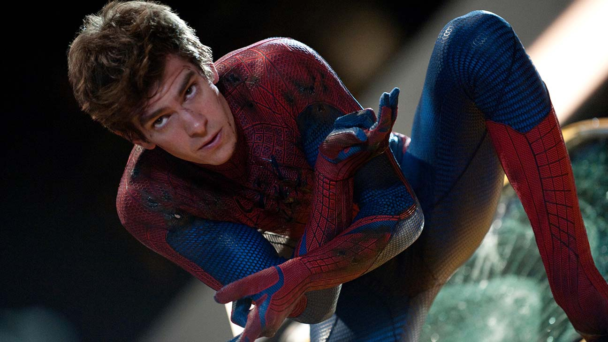

Новый Человек-паук
Эндрю Гарфилд в роли Человека-паука, который только становится на свой путь
Кинопоиск
Новый Человек-паук: высокое напряжение
Эндрю Гарфилд в роли Человека-паука, имеющего опыт за спиной
Кинопоиск
Человек-паук: нет пути домой
Эндрю Гарфилд в роли Человека-паука, который попадает в другую вселенную
Кинопоиск
Эндрю Гарфилд — талантливый американский актёр, известный своими
яркими ролями в кино и театре. Он начал свою карьеру в британском
телевидении, но вскоре завоевал мировую известность благодаря своим
ролям в голливудских фильмах. Гарфилд получил широкую известность
после того, как сыграл Питера Паркера в фильмах "Новый Человек-паук"
(2012) и "Новый Человек-паук 2: Высокое напряжение" (2014). Его
исполнение роли было высоко оценено как критиками, так и зрителями.